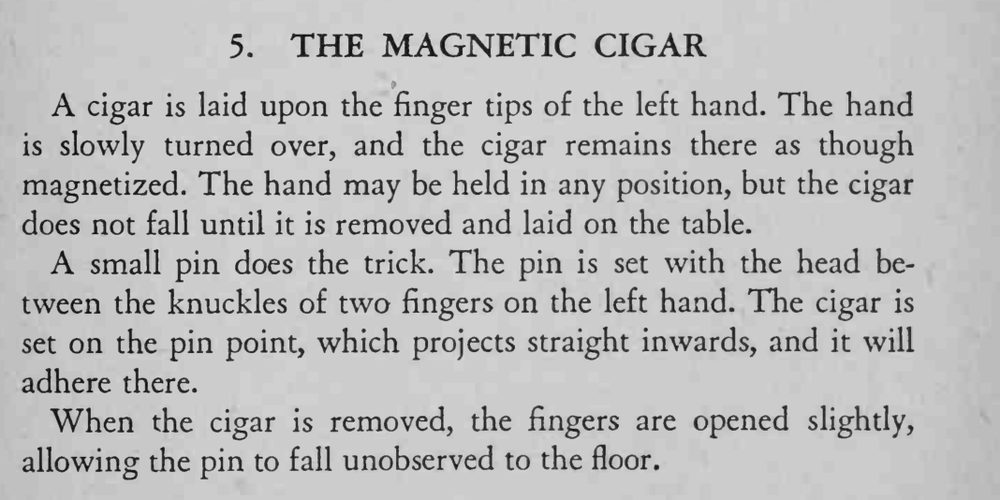

雪茄放在左手指尖上，手掌慢慢翻转，雪茄却像被磁铁吸住一样不掉下来。
针要夹稳，取雪茄的动作要自然，别让观众看见针。

A cigar is laid upon the finger tips of the left hand. The hand is slowly turned over, and the cigar remains there as though magnetized. The hand may be held in any position, but the cigar does not fall until it is removed and laid on the table. A small pin does the trick. The pin is set with the head between the knuckles of two fingers on the left hand. The cigar is set on the pin point, which projects straight inwards, and it will adhere there. When the cigar is removed, the fingers are opened slightly, allowing the pin to fall unobserved to the floor.